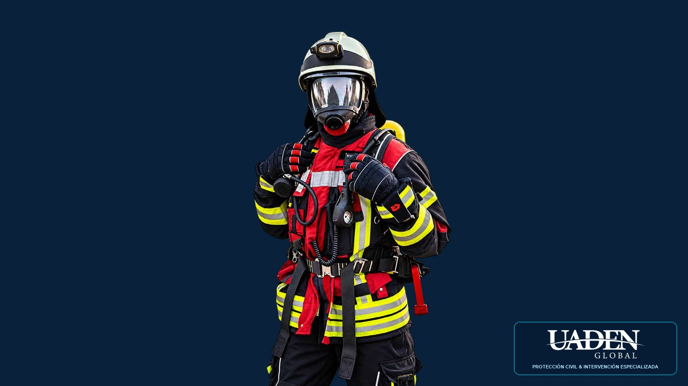
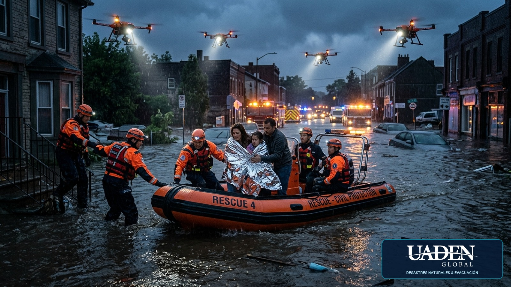
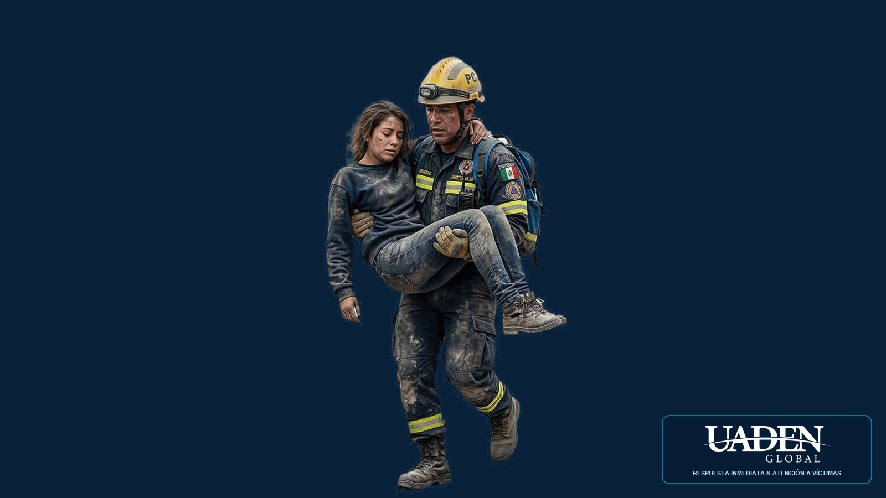

Paso 01 • Te Inscribes en Fase 1
2, 3, 4 y 5 de Noviembre
Gestión de Crisis, Emergencias y Catástrofes
Al completar esta fase, obtienes 1 Diplomado Internacional
Una visión integral de la gestión pública en situaciones extremas. Prepárese para anticipar riesgos, coordinar respuestas y contribuir a proteger vidas, instituciones y comunidades. 20 expertos internacionales (4 en vivo + 16 ponencias pregrabadas). Inscríbase en la Fase 1 y reciba GRATIS la Fase 2: obtenga 2 diplomados y 2 diplomas oficiales por una sola inversión.
Inscríbete en la Fase 1 y recibe GRATIS la Fase 2, obteniendo 2 diplomados completos y 2 diplomas oficiales por una inversión regular de $249 USD (o $189 USD con Early Bird). Una formación de alto impacto que multiplica su proyección profesional.
Doble titulación universitaria avalada por la Universidad Americana de Negocios de EE.UU. (UADEN Global), diseñada para liderar gabinetes de crisis, defensas civiles y municipios.
Los gobiernos y las instituciones públicas necesitan profesionales capaces de anticipar amenazas, organizar recursos, coordinar equipos y tomar decisiones bajo extrema presión.
Un desastre natural, una emergencia sanitaria, un incendio de grandes dimensiones o una interrupción de los servicios esenciales puede poner a prueba toda la capacidad de respuesta de una comunidad. La preparación profesional marca la diferencia entre una respuesta desorganizada y una gestión eficaz.
20 expertos capacitándole a usted: 4 expertos internacionales en vivo + 16 ponencias pregrabadas de alto nivel técnico. Cuatro jornadas intensivas en Fase 1 para explorar las principales dimensiones de la gestión pública, combinadas con acceso asincrónico garantizado a todas las grabaciones.
Estas jornadas ofrecen una perspectiva multidisciplinaria sobre los procedimientos, las herramientas y las capacidades necesarias para afrontar situaciones extraordinarias, complementadas con el diplomado completo de gestión de crisis municipal en la Fase 2.
Una gestión pública eficaz comienza mucho antes de que se produzca una catástrofe y continúa decididamente después de la respuesta inmediata.

Pilar 01Antes de la Emergencia

Pilar 02Durante la Crisis

Pilar 03Después del Desastre
Una visión integral para comprender los desafíos, las responsabilidades y los protocolos normativos de la gestión pública en escenarios de catástrofe.
Gestión de inundaciones súbitas, terremotos de alta intensidad, tsunamis, huracanes y contingencias climáticas severas.
Respuesta hospitalaria en saturación, triaje prehospitalario, contención de brotes infecciosos y salud pública en crisis.
Manejo de siniestros de grandes dimensiones, derrames de materiales peligrosos (HAZMAT), explosiones y rescate en estructuras colapsadas.
Rutas de escape, cordones de seguridad ciudadana, gestión de albergues temporales y protección de poblaciones vulnerables.
Operatividad conjunta entre fuerzas de seguridad, cuerpos de bomberos, defensa civil, ministerios y comités de emergencia.
Gestión de comités de crisis, cadenas de mando unificado y administración estratégica de recursos bajo alta incertidumbre.
Distribución de suministros de supervivencia, agua potable, energía de emergencia y medicamentos en áreas incomunicadas.
Gestión de medios masivos, combate a fake news, boletines oficiales y comunicación asertiva para evitar el pánico colectivo.
Un manual de procedimientos permite establecer responsabilidades, definir protocolos y orientar la actuación de los equipos ante situaciones de emergencia. Durante las jornadas abordaremos sus 10 componentes fundamentales.
Mapeo de peligros naturales, antrópicos, tecnológicos y biológicos en la jurisdicción.
Modelado de probabilidades, estimación de daños colaterales y vulnerabilidad social e infraestructural.
Delimitación precisa de competencias entre defensa civil, sanidad, seguridad y fuerzas armadas.
Estructura unificada de decisión para evitar vacíos de poder o duplicidad de instrucciones.
Criterios objetivos para declarar estados de alerta amarilla, naranja o roja institucional.
Guías operativas de repliegue, censado rápido de damnificados y gestión de refugios seguros.
Inventario dinámico de activos de rescate, maquinaria pesada y reserva estratégica de insumos.
Estrategia de vocería pública transparente, líneas telefónicas de crisis y combate de rumores.
Planes de contingencia para agua potable, red eléctrica, comunicaciones hospitalarias y gobernabilidad.
Bitácoras operativas, auditorías post-crisis y actualización periódica de protocolos vigentes.
Profesionales de máxima trayectoria internacional con liderazgo comprobado en organismos gubernamentales, defensa civil, sanidad y rescate humanitario.
Especialista en Gestión de Riesgos, Defensa Civil y Respuesta a Emergencias
Médico Especialista en Emergencias, Desastres y Atención Prehospitalaria
Médico, Magíster en Salud Pública e Investigador Clínico (+20 años exp.)
Médico Especialista en Emergencias, Urgencias y Atención Prehospitalaria
Eventos online en vivo transmitidos mayoritariamente desde Estados Unidos con respaldo técnico total y dinámicas interactivas sin fronteras.
Hable, chatee e interactúe con el instructor y sus compañeros en tiempo real. Transmisión estable desde EE.UU.
Capacite a todo su equipo de trabajo con una sola conexión, sin gastos de viaje, hospedaje ni viáticos.
Disponible como app móvil para dispositivos Apple (iOS) y Android. Conéctese desde cualquier lugar.
Si no puede asistir en directo a alguna sesión, tendrá acceso asincrónico a las grabaciones en alta definición.
Envíe hasta 5 preguntas específicas a los oradores hasta 72 horas antes del evento para ser respondidas en clase.
Al finalizar recibirá el directorio de contactos ejecutivos de colegas participantes para potenciar su red institucional.
Dirigido a líderes que participan o desean participar en la prevención, coordinación y gestión de contingencias extremas.
Invertir en conocimientos es prepararse para asumir mayores responsabilidades y proteger a su comunidad.
Obtenga 2 diplomados por una sola inversión
Las organizaciones, municipios, instituciones y equipos de trabajo pueden acceder a descuentos especiales por inscripciones múltiples:
Para facilitar la participación internacional, aceptamos las principales plataformas globales:
Descargue la ficha con las opciones de pago y datos para cotizaciones oficiales.
UADEN Global es la red internacional de escuelas de negocios que representa y difunde los programas y estándares académicos de la Universidad Americana de Negocios de los Estados Unidos (formación continua dependiente de la Cámara de las Empresas Latinas en EE.UU.).
Su modelo académico integra las metodologías más reconocidas de la educación ejecutiva mundial: Método del Caso de Harvard, aprendizaje abierto de Khan Academy y el enfoque finlandés de Tiimiakatemia, permitiendo que los participantes desarrollen competencias directamente aplicables desde el primer día.
Otorgado por la Universidad Americana de Negocios (UADEN) con código único de verificación y respaldo curricular internacional.
Todo lo que necesita saber para coordinar su participación sin contratiempos.
Solo requiere conexión a internet de banda ancha en cualquier dispositivo (computadora, tablet o smartphone), sin restricciones para video ni navegación web, y parlantes o audífonos habilitados. Podrá conectarse desde nuestra plataforma web o mediante las aplicaciones oficiales para iOS y Android.
Contamos con Garantía de Retransmisión. Todos los participantes registrados disponen de acceso asincrónico a las grabaciones íntegras en alta resolución junto con los apuntes y presentaciones descargables, para que no pierda ninguna sesión.
Su institución o empresa puede proyectar la transmisión en una sala de conferencias o reunión y capacitar a cuantos colaboradores lo requiera a través de una sola conexión activa, ahorrando el 100% de costos de traslado y hospedaje.
Cada participante tiene la posibilidad de enviar hasta 5 preguntas técnicas hasta 72 horas antes del inicio del curso. La coordinación organizará estas consultas para que los oradores las incorporen en sus respectivas exposiciones.
Una vez confirmado el registro o la orden de compra, la administración de UADEN en Estados Unidos emite el Invoice formal y la carta oficial de bienvenida, apta para rendición de cuentas, fondos de capacitación municipal y órdenes de pago gubernamentales.
"Las crisis no avisan. La preparación no puede esperar." Nuestro equipo de asesores le brindará orientación personalizada para resolver dudas y gestionar su inscripción inmediata.
Descargue el archivo PDF completo para someterlo a aprobación presupuestaria.
Descargar Folleto Completo (PDF)Complete sus datos y un asesor se comunicará con usted en menos de 2 horas.
Su asesor asignado le contactará vía WhatsApp/Correo para facilitarle los datos de acceso y el invoice.